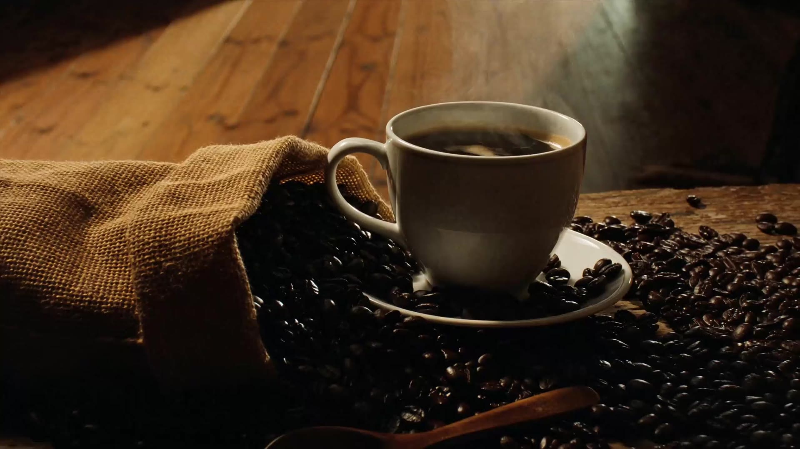

01
A TERRA
Cultivo
Tudo começa nas condições de cultivo, no cuidado com a terra e no desenvolvimento dos frutos.

CAFÉ DE ORIGEM · FEITO COM INTENÇÃO
Uma jornada de cuidado, da terra à primeira xícara.
Entre nessa história01 / A ESSÊNCIA
MAIS DO QUE CAFÉ
Um grande café é feito de escolhas cuidadosas: respeitar a terra, reconhecer o tempo e tratar cada etapa como parte de algo maior.
Nossa maneira de fazer02 / DE ONDE VIEMOS
CADA ORIGEM CONTA
Antes do aroma, existe a terra. Antes do sabor, uma jornada. E antes de tudo, uma origem que merece respeito.

NOSSA FILOSOFIA
O lugar onde o café cresce, o cuidado com a colheita e as decisões tomadas durante o processo ajudam a construir uma experiência que vai além do sabor.
Na TORRA NOBRE, a origem é o ponto de partida de uma busca contínua por qualidade, identidade e significado.
Continue a jornada
UMA QUESTÃO DE TEMPO
“O extraordinário mora nos detalhes que escolhemos não ignorar.”TORRA NOBRE · NOSSA FILOSOFIA
03 / A JORNADA
DO GRÃO À EXPERIÊNCIA
Cada etapa transforma o café. Cada decisão influencia aquilo que chega à sua xícara.
A TERRA
Tudo começa nas condições de cultivo, no cuidado com a terra e no desenvolvimento dos frutos.

A SELEÇÃO
A seleção cuidadosa dos frutos faz parte da busca por consistência e qualidade em cada lote.

A TRANSFORMAÇÃO
Tempo e temperatura contribuem para desenvolver os aromas e as características sensoriais.

O RESULTADO
Um convite para desacelerar, perceber os detalhes e aproveitar o momento presente.
Uma jornada construída com atenção em cada etapa.

04 / A ARTE DA TORRA
CIÊNCIA, SENSIBILIDADE E PRECISÃO
A torra é um dos momentos mais importantes da jornada. É quando o controle do tempo e da temperatura ajuda a revelar as características de cada grão.
Explore nossa seleção05 / NOSSA SELEÇÃO
ENCONTRE SEU PRÓXIMO FAVORITO
Cada café pode oferecer uma experiência diferente. Descubra os perfis que combinam com o seu momento.
 PERFIL CLÁSSICO
PERFIL CLÁSSICO
01 / EQUILÍBRIO
Um perfil pensado para acompanhar os rituais de todos os dias, com equilíbrio e simplicidade.
Descubra este perfil PERFIL INTENSO
PERFIL INTENSO
02 / PERSONALIDADE
Uma proposta de presença marcante para quem gosta de sabores intensos e momentos sem pressa.
Descubra este perfil PERFIL EXPLORATÓRIO
PERFIL EXPLORATÓRIO
03 / DESCOBERTA
Uma oportunidade para explorar novas experiências e descobrir outras possibilidades na xícara.
Descubra este perfilLinhas, disponibilidade, notas sensoriais e informações comerciais são conceituais e devem ser confirmadas antes da publicação.
06 / SEU MOMENTO
UM RITUAL QUE É SÓ SEU
O primeiro gole da manhã. Uma pausa entre compromissos. Uma conversa que se estende.
O café encontra espaço nos pequenos momentos que tornam os dias especiais.
Conheça o que nos move
07 / NOSSO MANIFESTO
AQUILO EM QUE ACREDITAMOS
SUA PRÓXIMA DESCOBERTA COMEÇA AQUI
Entre em contato para conhecer a proposta da TORRA NOBRE e acompanhar as novidades da marca.
Fale com a TORRA NOBRE O e-mail é provisório. Substitua-o por um contato real antes da publicação.